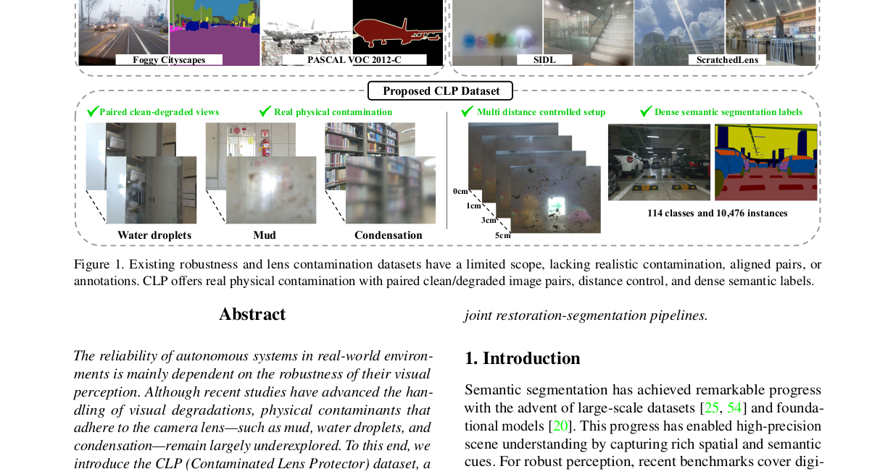
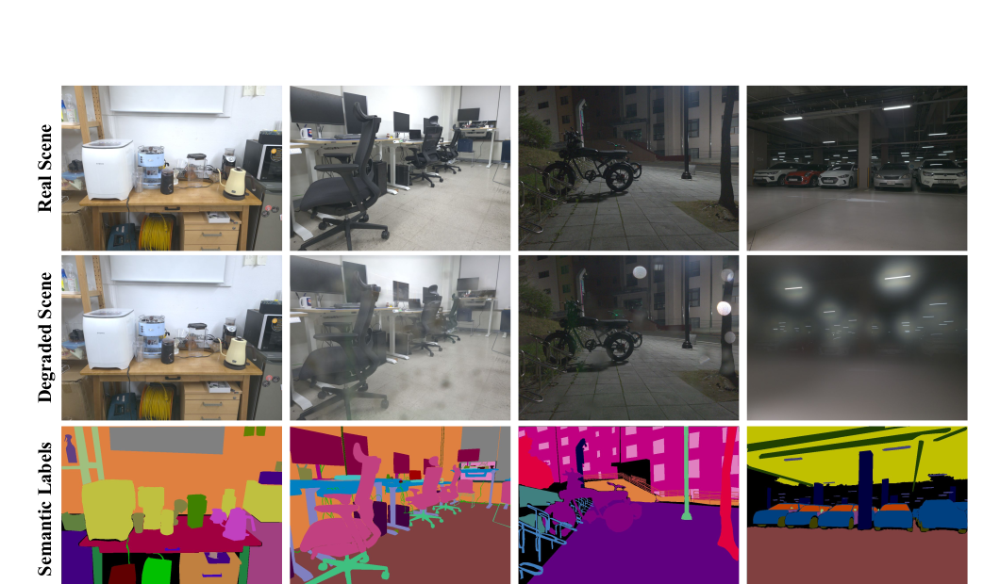
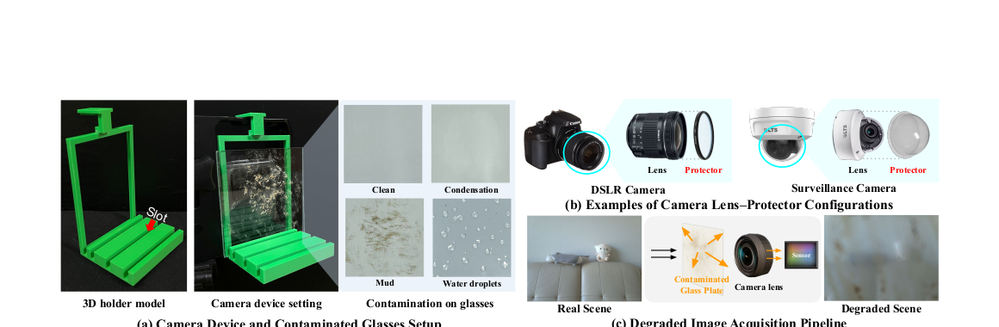
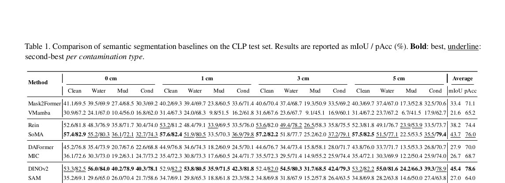
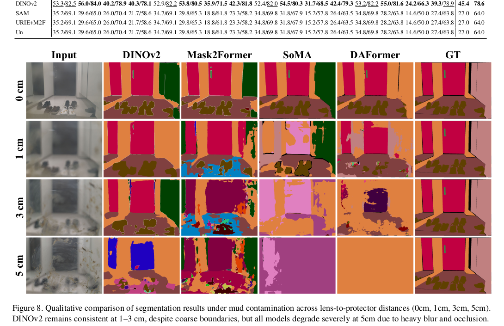
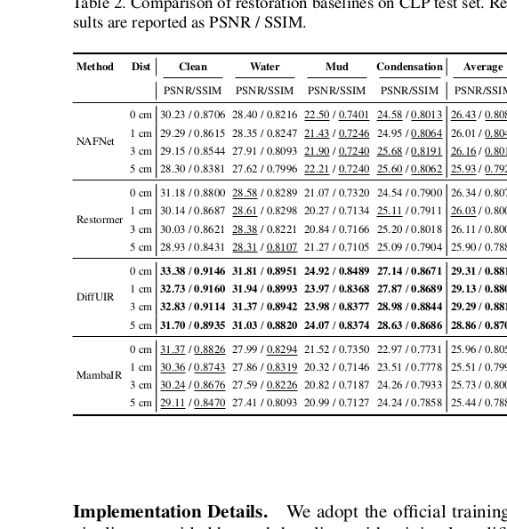
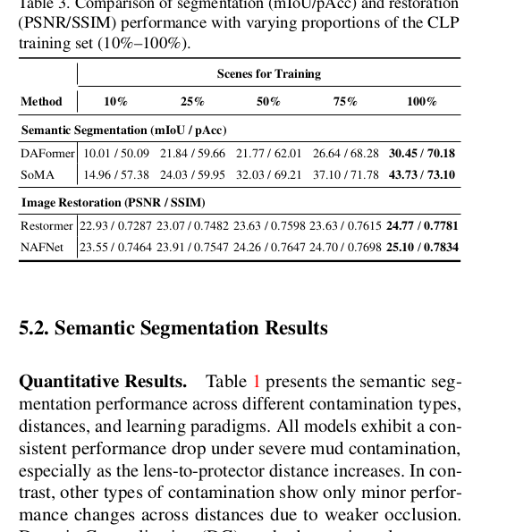
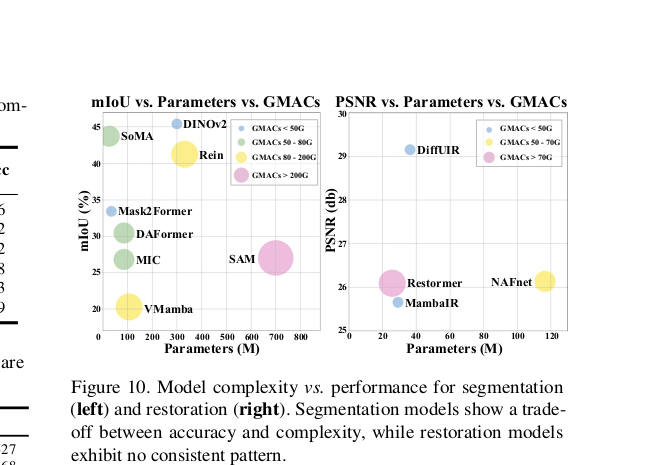

Why CLP
Existing robustness datasets largely focus on synthetic corruption or weather, while lens-contamination datasets often miss aligned pairs, dense labels, or controlled geometry.
A real-world benchmark for robust perception under lens-protector contamination, with paired clean/degraded images, dense semantic labels, aligned restoration targets, and controlled lens-to-protector distance variation.

CLP is built as a controlled but realistic benchmark for contamination-aware perception.
CLP introduces a real-world dataset for evaluating visual perception under realistic lens-protector contamination. The dataset covers mud, water droplets, and condensation across multiple lens-to-protector distances, and provides paired clean and contaminated captures, dense semantic segmentation masks, and aligned restoration targets. This enables controlled study of robust segmentation and restoration in conditions that better reflect practical camera systems used in autonomous and embodied platforms.
Existing robustness datasets largely focus on synthetic corruption or weather, while lens-contamination datasets often miss aligned pairs, dense labels, or controlled geometry.
CLP is designed around paired clean/degraded RGB images, semantic masks, restoration targets, and benchmark protocols for both segmentation and restoration.
The lens-to-protector gap changes degradation behavior in a way that synthetic corruption does not capture, making CLP a more faithful testbed for real camera systems.
The paper couples scene-level examples with a controlled hardware setup for reproducible contamination capture.


We include the paper’s table crops directly so the project page keeps the academic results visible and faithful.
DINOv2 reports the best average semantic segmentation performance on CLP with 45.4 mIoU / 78.6 pAcc, while SoMA is a strong efficient DG baseline at 43.7 / 76.0.
DiffUIR is the strongest restoration baseline in the paper, but severe contamination still leaves visible artifacts, showing that CLP remains challenging even for strong recent restoration models.
Increasing the training set consistently improves both segmentation and restoration, supporting CLP’s value as a scalable benchmark rather than a small diagnostic-only dataset.





Because this site is hosted on GitHub Pages, direct server-side upload is not available here. We therefore set up a GitHub issue-based access and submission flow that works immediately and can later be replaced by Hugging Face, Google Drive, or a dedicated benchmark server.
Direct link to the project paper hosted with the site.
Request dataset access through a prefilled GitHub issue until the public release package is posted.
Use the issue template to submit method name, summary metrics, and a link to prediction files.
Paired clean/degraded RGB images, segmentation masks, restoration targets, and benchmark protocol docs.
1. Export your predictions and compress them into a single archive.
2. Upload the archive to a public file host such as Google Drive, OneDrive, or Hugging Face.
3. Open the “Submit Results” issue and paste the file link, method name, and headline metrics.
4. When a dedicated benchmark server is ready, these issue-based links can be replaced without changing the site layout.
The conclusion and limitation are summarized directly from the paper’s final section.
CLP establishes a real-world benchmark for robust perception under practical sensor contamination. By combining mud, water droplets, and condensation with varied lens-to-protector distances, the dataset supports principled evaluation of segmentation, restoration, data scaling, and joint restoration-segmentation pipelines. The paper’s results point to domain generalization, foundation-model-based methods, and larger data scale as promising directions for more reliable contaminated-vision systems.
The current scope is RGB-centric and focused on semantic annotations. The paper notes that future extensions could add modalities such as depth or multi-view captures, opening up research on 3D perception and multimodal learning under contamination.
Copy-ready BibTeX for the project page.
@inproceedings{park2026clp,
title = {CLP: A Real-World Dataset of Contaminated Lens Protectors for Robust Semantic Segmentation},
author = {Sungyong Park and Sooyoung Choi and Hyunseo Koh and Youngjae Choi and Heewon Kim},
booktitle = {Proceedings of the IEEE/CVF Conference on Computer Vision and Pattern Recognition},
year = {2026}
}